Chapter 10 Potential manure production under current land use
This chapter presents a spatial approach to estimating livestock carrying capacity and potential manure production, accounting for the interactions between grazing resources, crop residues and nutrient flows.
10.1 Introduction
In mixed crop–livestock systems, crop and livestock production are closely interconnected. Livestock depend on natural grazing resources and crop residues for feed, while manure provides nutrients that can contribute to crop production. Legumes can further contribute to soil fertility through biological nitrogen fixation. Understanding these interactions is important for assessing the potential of mixed farming systems to sustain livestock populations while maintaining crop production and nutrient availability.
This chapter presents a spatial workflow for assessing livestock carrying capacity and the interactions between grazing resources, crop residues and nutrient flows. It considers two main sources of livestock feed: natural grassland during the wet season and crop residues during the dry season. Crop production, in turn, depends partly on nutrient inputs from manure and biological nitrogen fixation by legumes. These interactions are considered together to estimate the livestock population that can be supported by available feed resources.
The workflow combines spatial data on rainfall, land cover and cropland with assumptions about livestock feed requirements, crop allocation, residue production, manure collection and nutrient content. It also incorporates a crop yield response function to estimate how nutrient availability influences maize production and, consequently, crop residue availability.
An important simplifying assumption is that the calculations are conducted independently for each raster cell. Livestock assigned to a cell are assumed to rely on the grazing resources and crop residues available in that cell, and manure collected from these animals is assumed to be returned to cropland within the same cell. The workflow therefore does not represent movements of cattle between cells, access to grazing resources beyond a cell’s boundaries, or the transport of manure between locations. The resulting estimates should be interpreted as local, cell-based carrying capacities rather than as a spatially explicit representation of herd movements across the landscape.
The workflow comprises four main stages:
- Preparing the spatial data, including rainfall, grassland and cropland area;
- Estimating wet-season grazing carrying capacity from grassland biomass and livestock feed requirements;
- Estimating dry-season feed availability from crop residues, while accounting for nutrient inputs from manure and biological nitrogen fixation by legumes;
- Integrating grazing and crop-residue constraints through an iterative calculation to estimate the livestock population that can be supported, identify the limiting factor and map the resulting stocking density.
The approach is demonstrated for Mbire District, Zimbabwe. The resulting estimates are also compared with gridded livestock data from the FAO Gridded Livestock of the World (GLW) to provide an indication of their consistency with an independently derived livestock distribution.
A standalone R script containing the workflow is available here: https://github.com/FBaudron/book_standardized_workflows/blob/main/10-potential_manure_production/potential_manure_production.R.
We first load the necessary packages.
if (!require("terra")) install.packages("terra")
if (!require("geodata")) install.packages("geodata")
library(terra)
library(geodata)
path = "Data"10.2 Preparing the data
10.2.1 Define the study area
The analysis is conducted for Mbire District, Zimbabwe. The district boundary is retrieved from the GADM database at administrative level 2. The district name is used to select the corresponding polygon.
zwe_all = geodata::gadm("ZWE", level = 2, path = path)
zwe = zwe_all[zwe_all$NAME_2 == "Mbire", ]
plot(zwe, main = "Mbire District, Zimbabwe")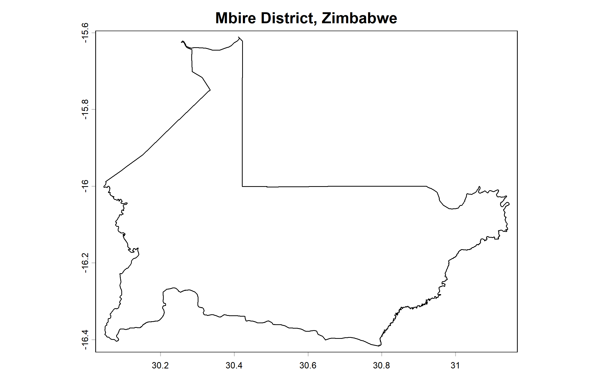
10.2.2 Define model parameters
The model combines spatial information with parameters describing livestock feed requirements, grassland biomass production, crop allocation, residue availability and nutrient flows. These parameters are defined at the beginning of the script so that they can be adapted to other study areas or production systems.
maize_share = 0.75
legume_share = 0.25
RUE = 2.35 # kg DM / ha / mm (Rufino 2011)
wet_months = 6
winter_months = 12 - wet_months
grazing_utilisation = 1
cattle_weight = 250 # kg per head
cattle_daily_intake = 0.03 # fraction of body weight per day
collection_rate = 0.4
manure_t_per_TLU = 1.022
N_content_manure = 0.014
P_content_manure = 0.002
NDFA_rate = 0.62
HI_gdnuts = 0.4
# PLACEHOLDERS: replace with locally appropriate values
residue_to_grain_ratio = 1.5
residue_degradation = 1
residue_feed_share = 1
max_iterations = 50
tolerance = 0.01The crop allocation parameters define the proportions of cropland allocated to maize and legumes. In this example, 75% of cropland is allocated to maize and 25% to legumes. The livestock parameters describe the assumed liveweight and daily feed intake of one animal, while the manure parameters determine the amount of manure collected and its nitrogen and phosphorus content.
The residue-to-grain ratio, residue degradation and residue feed share are placeholders in the script and should be replaced with values appropriate to the production system being analysed. The iteration limit and convergence tolerance control the iterative calculation described later.
10.2.3 Prepare the spatial data
The spatial inputs include annual precipitation, grassland fraction and cropland fraction. The land-cover fractions are converted into areas using the area of each raster cell. All layers are aligned to the precipitation raster, which provides the reference grid for subsequent calculations.
Monthly precipitation data are retrieved from WorldClim. Annual precipitation is calculated by summing the 12 monthly layers. The resulting raster is cropped and masked to the district boundary.
prec = geodata::worldclim_country("ZWE", var = "prec", path = path)
R = mask(crop(sum(prec), zwe), zwe)
names(R) = "rain_mm"
plot(R, main = "Annual rainfall (mm)")
plot(zwe, add = T)Grassland and cropland fractions are obtained from the ESA WorldCover land-cover products. These layers are resampled to the precipitation grid. Bilinear interpolation is used because the fractions are continuous variables.
grass_frac = geodata::landcover("grassland", path = path)
grass_frac = crop(grass_frac, zwe)
grass_frac = mask(grass_frac, zwe)
names(grass_frac) = "grassland_share"
plot(grass_frac, main = "Grassland share")
plot(zwe, add = T)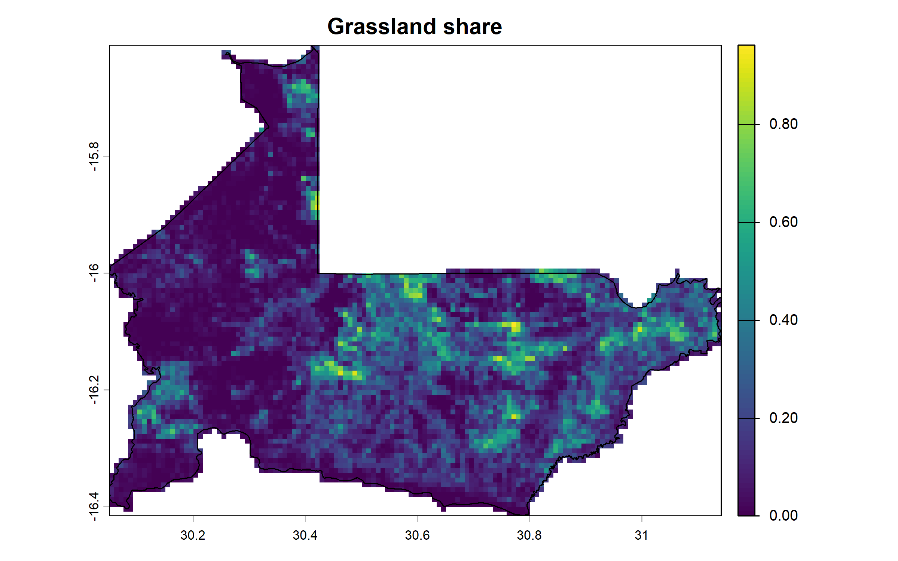
crop_frac = geodata::landcover("cropland", path = path)
crop_frac = crop(crop_frac, zwe)
crop_frac = mask(crop_frac, zwe)
names(crop_frac) = "cropland_share"
plot(crop_frac, main = "Cropland share")
plot(zwe, add = T)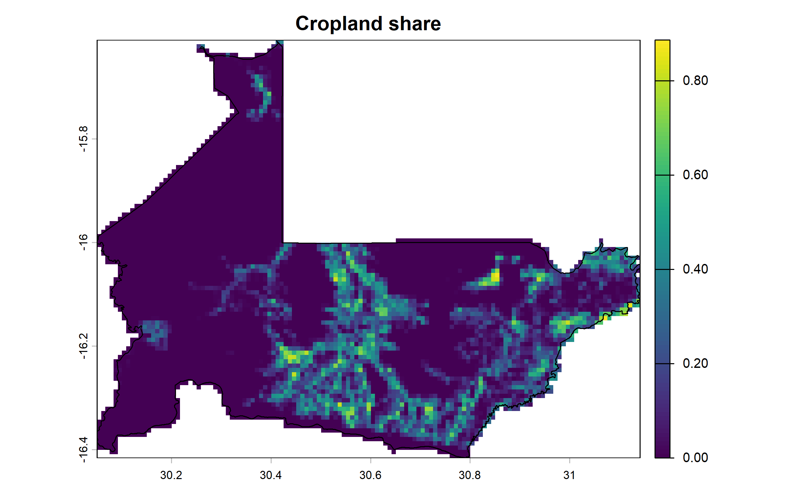
We then calculate grassland and cropland areas. The area of each raster cell is calculated in hectares. Multiplying cell area by the grassland and cropland fractions gives the corresponding areas within each cell. The cover() function replaces missing values with zero within the district, so that cells with no mapped grassland or cropland can be retained in subsequent calculations.
cell_ha = cellSize(R, unit = "ha")
zero_in = R * 0
Agrassland = cover(cell_ha * grass_frac, zero_in)
Acropland = cover(cell_ha * crop_frac, zero_in)
names(Agrassland) = "grassland_ha"
names(Acropland) = "cropland_ha"10.3 Estimation of wet-season grazing carrying capacity
Wet-season grazing carrying capacity is estimated from grassland biomass production and livestock feed requirements. Biomass production is estimated by multiplying annual rainfall by a rain-use efficiency (RUE) coefficient. The resulting biomass per hectare is multiplied by grassland area and the grazing utilisation parameter to estimate biomass available for grazing within each cell.
This calculation is performed separately for every raster cell. The grassland area and estimated biomass within a cell determine how many TLU that cell can support during the wet season. No exchange of grazing resources or livestock between neighbouring cells is considered. In particular, a cell with little grassland is not assumed to be able to draw on more abundant grazing resources in an adjacent cell.
Livestock feed requirements are calculated from assumed daily intake, animal liveweight and the duration of the wet season. In this example, the wet season is assumed to last six months.
daily_need_kg = cattle_daily_intake * cattle_weight
days_wet = (365/12) * wet_months
wet_feed_per_TLU = daily_need_kg * days_wet
biomass_ha = RUE * R
plot(biomass_ha, main = "Grassland biomass (kg DM / ha)")
lines(zwe)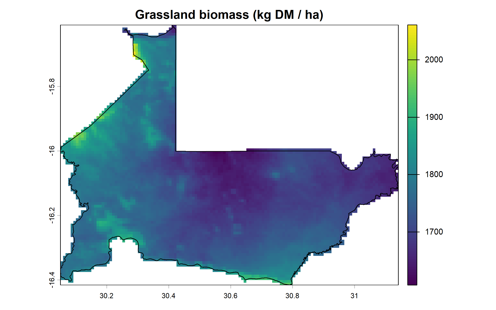
biomass = biomass_ha * Agrassland * grazing_utilisation
max_grazing_CC_TLU = biomass/wet_feed_per_TLU
names(max_grazing_CC_TLU) = "grazing_CC_TLU"
max_grazing_CC_TLU_ha = max_grazing_CC_TLU/cell_ha
names(max_grazing_CC_TLU_ha) = "grazing_CC_TLU_per_ha"The carrying capacity is first calculated as the total number of tropical livestock units (TLU) supported by the grassland in each cell. Dividing by cell area expresses the result as TLU per hectare.
The following map uses quantile-based breaks calculated from the values within the district. This avoids applying fixed breaks that may have been defined for a different geographical area.
q_brk = unique(quantile(values(max_grazing_CC_TLU_ha), na.rm = TRUE))
print(q_brk)[1] 0.00000000 0.02991415 0.12567843 0.28441292 1.19654256if (length(q_brk) > 2) {
plot(max_grazing_CC_TLU_ha, breaks = q_brk, main = "Grazing carrying capacity (TLU / ha)")
} else {
plot(max_grazing_CC_TLU_ha, main = "Grazing carrying capacity (TLU / ha)")
}
lines(zwe, col = "black")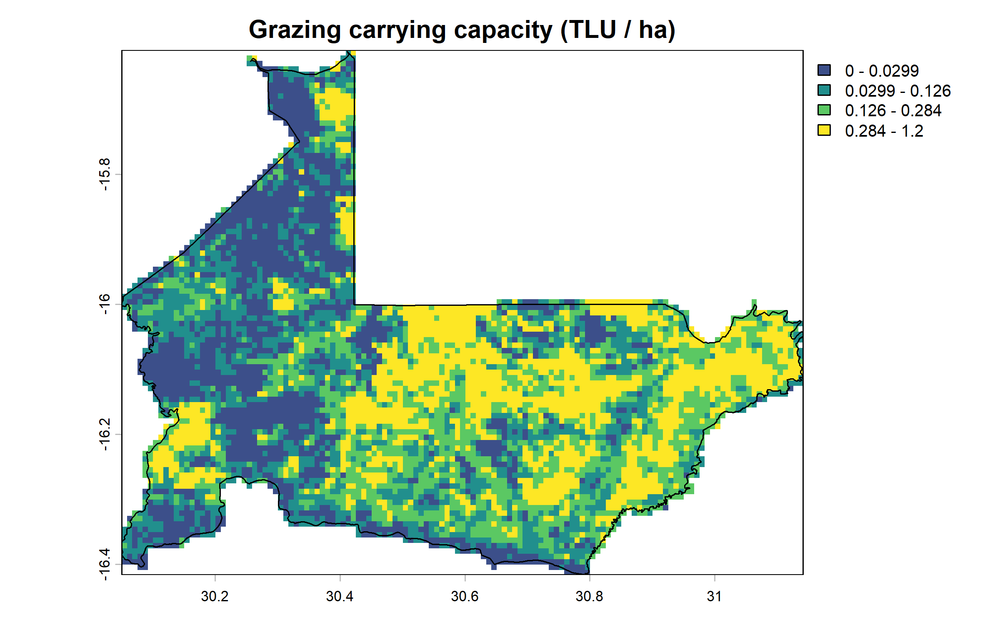
10.4 Estimation of dry-season feed and nutrient supply
During the dry season, livestock feed availability is estimated from crop residues. The amount of crop residue produced depends on crop area, grain production and the residue-to-grain ratio. In this workflow, cropland is divided between maize and legumes. Legumes also contribute nitrogen through biological nitrogen fixation, while livestock manure provides nitrogen and phosphorus to maize production.
10.4.1 Allocate cropland to maize and legumes
The total cropland area in each cell is divided between maize and legumes according to the proportions defined in the model parameters.
winter_feed_per_TLU_tons = (daily_need_kg/1000) * (365/12) * winter_months
maize_ha = Acropland * maize_share
legume_ha = Acropland * legume_share
names(maize_ha) = "maize_ha"
names(legume_ha) = "legume_ha"10.4.2 Estimate nitrogen fixation by legumes
Nitrogen contributed by legumes is estimated from aboveground biomass, grain yield, root biomass and nitrogen concentrations in residues and grain. The proportion of nitrogen derived from the atmosphere (NDFA) is then used to estimate biological nitrogen fixation. Nitrogen exported in harvested grain is subtracted to estimate the amount of fixed nitrogen remaining in the system.
The values for groundnut biomass and grain yield in this example are fixed values taken from the groundnut monitoring data referred to in the source script. They should be adapted when applying the workflow to another context.
# Aboveground biomass and grain yield (kg/ha)
above = 2907
grain = 688
roots = 0.3 * above
residues = above + roots
N_residues = residues * 0.02
N_grains = grain * 0.038
N_uptake = N_residues + N_grains
NDFA = N_uptake * NDFA_rate
N_exported = NDFA * HI_gdnuts
N_fixed = NDFA - N_exported
# N available per ha of maize, scaled by the legume:maize area ratio
N_legumes_per_ha_maize = N_fixed * (legume_share/maize_share)
total_gdnut_grain_prod = grain * legume_ha
total_N_legumes = N_legumes_per_ha_maize * maize_ha
names(total_gdnut_grain_prod) = "total_gdnut_grain_kg"
names(total_N_legumes) = "total_N_legumes_kg"The nitrogen remaining in the system is expressed per hectare of maize by scaling the fixed nitrogen according to the legume-to-maize area ratio. This provides an estimate of the nitrogen contribution from legumes to the maize area under the assumed crop allocation.
10.4.3 Define the maize yield response to nutrient inputs
Maize yield response is represented using polynomial functions fitted to experimental data from sandy soils in Murehwa, Zimbabwe, as indicated in the source script. Separate response functions are fitted for two phosphorus conditions: at least 30 kg P/ha and below 30 kg P/ha.
The fitted functions are used to predict maize yield from nitrogen and phosphorus inputs. Nitrogen input is capped at 120 kg/ha, corresponding to the upper limit of the experimental data used to fit the response functions.
data_sandy_p_ge_30 = data.frame(x = c(0, 30, 60, 90, 120), y = c(1.19, 2.7, 2.97,
3.24, 3.73))
data_sandy_p_lt_30 = data.frame(x = c(0, 30, 60, 90, 120), y = c(0.645, 1.79, 1.823,
2.193, 2.016))
cf_ge = coef(lm(y ~ x + I(x^2), data = data_sandy_p_ge_30))
cf_lt = coef(lm(y ~ x + I(x^2), data = data_sandy_p_lt_30))
predict_yield = function(N_kg_ha, P_kg_ha) {
N_c = terra::clamp(N_kg_ha, 0, 120)
y_ge = cf_ge[1] + cf_ge[2] * N_c + cf_ge[3] * N_c^2
y_lt = cf_lt[1] + cf_lt[2] * N_c + cf_lt[3] * N_c^2
ifel(P_kg_ha >= 30, y_ge, y_lt)
}10.5 Integrate grazing and crop-residue constraints
The final livestock carrying capacity is constrained by the availability of feed during both the wet and dry seasons. Wet-season grazing capacity is estimated from grassland biomass, while dry-season carrying capacity is estimated from crop residues. Crop residue availability depends on maize production, which in turn depends on nutrient inputs from manure and legumes.
This creates a feedback between livestock numbers and crop production: livestock numbers determine manure availability; manure contributes nutrients to maize; maize yield determines residue production; and residues constrain the livestock population that can be supported during the dry season.
The script addresses this feedback through an iterative calculation. Starting from the grazing-based carrying capacity, it estimates manure-derived nitrogen and phosphorus, predicts maize yield, calculates crop residue production and derives the corresponding residue-based carrying capacity. Livestock numbers are then constrained by the lower of the grazing-based and residue-based capacities. The process is repeated until the change in livestock numbers between iterations falls below the specified tolerance.
10.5.1 Initialize the iterative calculation
The initial livestock population is set to the grazing-based carrying capacity. Cells without maize area are identified because manure nutrients are expressed per hectare of maize.
CC_grazing = max_grazing_CC_TLU
has_maize = maize_ha > 0
maize_safe = ifel(has_maize, maize_ha, NA)
n_inside = global(!is.na(R), "sum")[1, 1]
current_TLU = CC_grazing
convergence_iteration = R * NA
max_change = rep(NA_real_, max_iterations)
actual_iterations = max_iterations10.5.2 Iterate between manure supply, maize production and residue availability
At each iteration, manure-derived nitrogen and phosphorus per hectare of maize are calculated from the current livestock population. These nutrients are added to the estimated nitrogen contribution from legumes. The resulting nutrient inputs are used to predict maize yield, which is converted into total crop residue production. The amount of residue available is then translated into a dry-season carrying capacity.
The livestock population is updated using the more restrictive of the grazing-based and residue-based carrying capacities. The iteration stops when all valid cells have converged or when the maximum number of iterations is reached.
for (iter in seq_len(max_iterations)) {
N_manure_per_ha = (current_TLU * manure_t_per_TLU * collection_rate * N_content_manure *
1000)/maize_safe
P_manure_per_ha = (current_TLU * manure_t_per_TLU * collection_rate * P_content_manure *
1000)/maize_safe
N_total_per_ha = N_manure_per_ha + N_legumes_per_ha_maize
P_total_per_ha = P_manure_per_ha
sandy_yield = predict_yield(N_total_per_ha, P_total_per_ha)
total_maize_prod = maize_ha * sandy_yield
total_residues = total_maize_prod * residue_to_grain_ratio * residue_degradation *
residue_feed_share
CC_residues = total_residues/winter_feed_per_TLU_tons
CC_residues = ifel(has_maize, CC_residues, 0)
# Cell-wise minimum of grazing- and residue-based carrying capacity
new_TLU = ifel(CC_grazing < CC_residues, CC_grazing, CC_residues)
change = abs(new_TLU - current_TLU)
max_change[iter] = global(change, "max", na.rm = TRUE)[1, 1]
if (iter > 1) {
newly_converged = is.na(convergence_iteration) & (change < tolerance)
convergence_iteration = ifel(newly_converged, iter, convergence_iteration)
}
current_TLU = new_TLU
n_conv = global(!is.na(convergence_iteration), "sum")[1, 1]
if (n_conv == n_inside) {
actual_iterations = iter
break
}
}A cell-wise minimum is used, so that the constraint is determined separately for every raster cell. The convergence raster records the iteration at which the change in estimated livestock numbers first falls below the specified tolerance.
Because the calculation is cell-based, this iterative process does not redistribute livestock in response to differences in carrying capacity between cells. For example, livestock numbers are reduced in a cell where crop residues are limiting, even if neighbouring cells have a surplus of residues or grazing biomass. Similarly, manure generated by the livestock population in a cell contributes to the estimated nutrient supply of cropland in that same cell. Representing livestock mobility would require an additional spatial allocation component, for example one that defines the areas accessible to each herd and allows animals to use resources across cell boundaries.
10.5.3 Calculate final stocking density and limiting factor
The final livestock population is the result of the iterative calculation. Dividing it by cell area expresses the estimate as a stocking density. The limiting-factor raster identifies whether grazing resources or crop residues impose the lower carrying capacity.
final_TLU = current_TLU
names(final_TLU) = "final_TLU"
TLU_per_ha = final_TLU/cell_ha
names(TLU_per_ha) = "TLU_per_ha"
limiting_factor = ifel(CC_residues < CC_grazing, 2, 1)
names(limiting_factor) = "limiting_factor"
names(convergence_iteration) = "convergence_iteration"
plot(limiting_factor, main = "Limiting factor")
plot(zwe, add = T)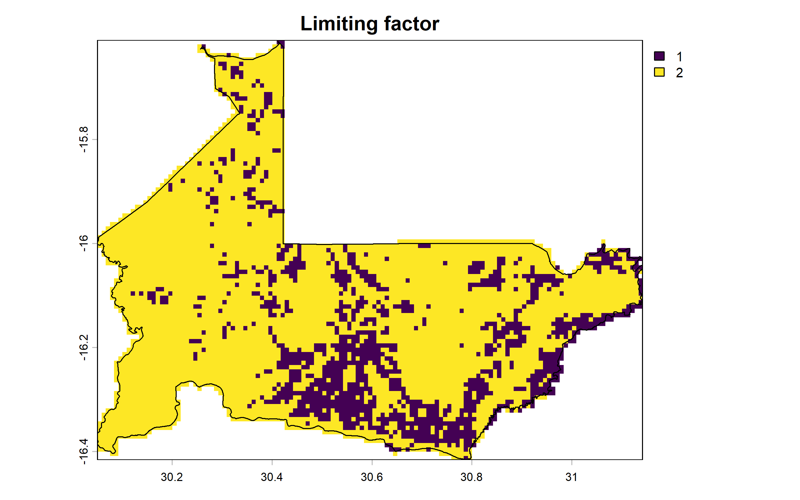
The limiting-factor raster is coded as follows:
- 1: grazing land is the limiting factor;
- 2: crop residues are the limiting factor.
10.6 Map outputs
The workflow produces four complementary spatial outputs:
- Grazing-based carrying capacity shows the number of TLU per hectare that could be supported by wet-season grassland resources, before accounting for the dry-season feed constraint.
- Final stocking density shows the estimated number of TLU per hectare after integrating wet-season grazing and dry-season crop-residue constraints through the iterative calculation.
- Limiting factor identifies which of the two seasonal feed resources imposes the lower carrying capacity in each cell: wet-season grazing or dry-season crop residues.
- Nitrogen supplied by manure shows the estimated manure-derived nitrogen input per hectare of maize under the livestock population obtained at the end of the iterative calculation.
The first and fourth maps use a capped colour scale to improve the visibility of spatial variation. The cap is set at the 98th percentile of the values in the district. This affects only the displayed colour scale; it does not modify the raster values used in the analysis. The final stocking-density map is displayed using its full range. The limiting-factor map is categorical and is therefore displayed using discrete colours.
10.6.1 Grazing-based carrying capacity
This map represents the wet-season constraint alone. It is useful for identifying areas where grassland resources could support relatively high livestock densities, independently of the availability of crop residues during the dry season.
# Calculate the 98th percentile for the display scale
grazing_CC_max = quantile(values(max_grazing_CC_TLU_ha, mat = FALSE), probs = 0.98,
na.rm = TRUE)
# Cap values above the 98th percentile for visualisation
max_grazing_CC_TLU_ha_plot = terra::clamp(max_grazing_CC_TLU_ha, lower = 0, upper = grazing_CC_max)
plot(max_grazing_CC_TLU_ha_plot, main = "Grazing-based carrying capacity (TLU/ha)",
col = hcl.colors(100, "YlGnBu", rev = TRUE))
plot(zwe, add = T)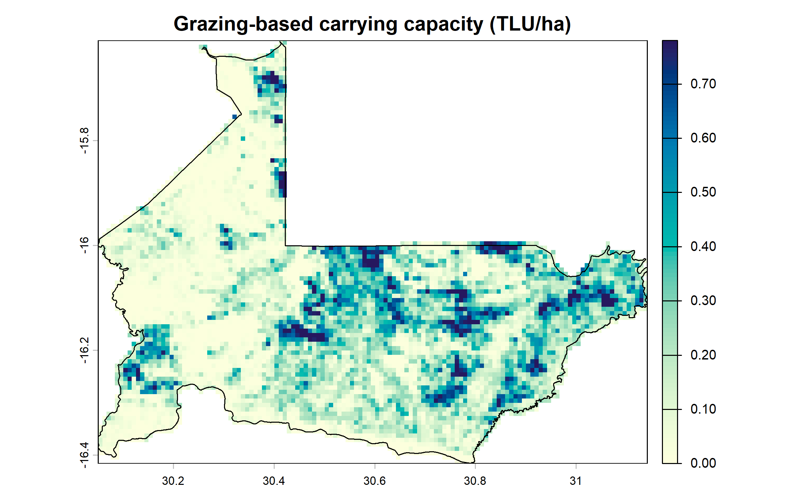
10.6.2 Final stocking density
This map shows the estimated stocking density after accounting for both wet- and dry-season feed availability and the feedback between livestock numbers, manure inputs, maize yield and crop-residue production. It is therefore the main carrying-capacity output of the workflow.
plot(TLU_per_ha, main = "Final stocking density (TLU / ha)", col = hcl.colors(100,
"YlGnBu", rev = TRUE))
plot(zwe, add = T)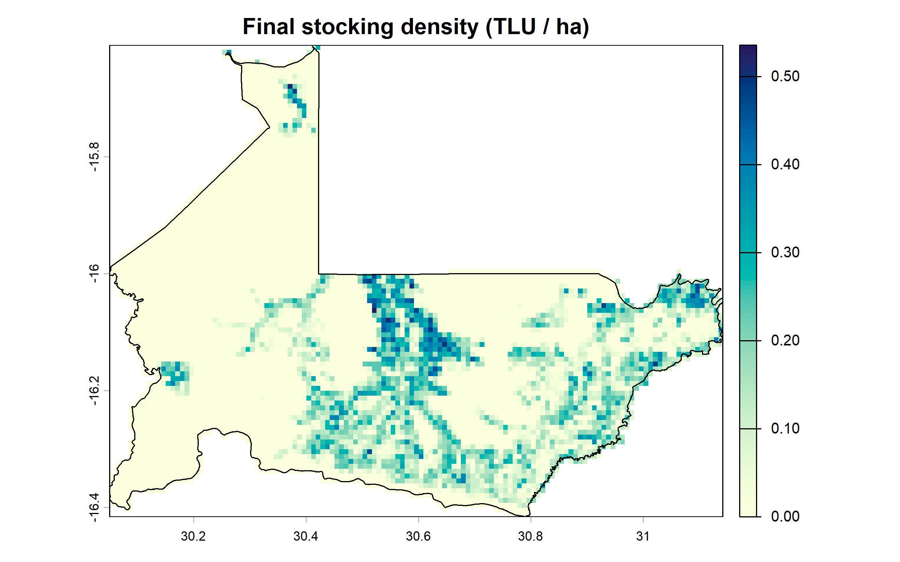
10.6.3 Limiting factor
The limiting-factor map indicates which seasonal feed resource determines the final carrying capacity in each cell. A value of 1 indicates that wet-season grazing is more limiting; a value of 2 indicates that dry-season crop residues are more limiting. Unlike the other outputs, this is a categorical map, so it is displayed with discrete colours rather than a continuous, percentile-capped colour scale.
plot(as.factor(limiting_factor), main = "Limiting factor", col = c("#2C7BB6", "#D7191C"),
levels = c("Grazing land", "Crop residues"), plg = list(title = "Limiting resource"))
plot(zwe, add = T)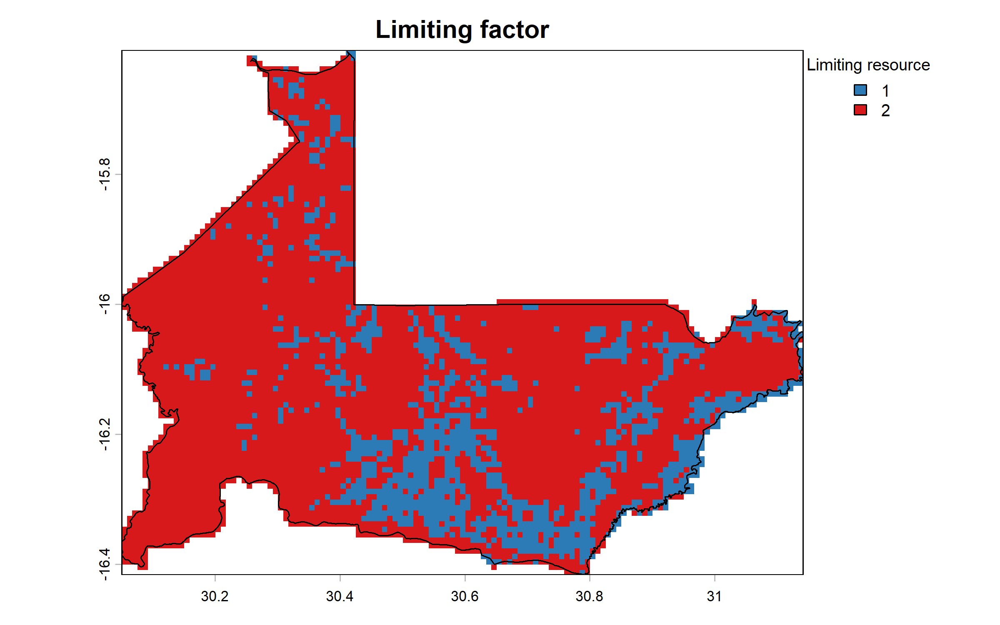
10.6.4 Nitrogen supplied by manure
This map shows the estimated nitrogen supplied by collected manure per hectare of maize, based on the livestock population at the end of the iterative calculation. It illustrates the spatial pattern of manure-derived nitrogen inputs implied by the model. These estimates depend on the assumed manure production, collection rate and nutrient content, as well as on the cell-based assumption that manure is returned to cropland within the same cell.
# Calculate the 98th percentile for the display scale
N_manure_max = quantile(values(N_manure_per_ha, mat = FALSE), probs = 0.98, na.rm = TRUE)
# Cap values above the 98th percentile for visualisation
N_manure_per_ha_plot = terra::clamp(N_manure_per_ha, lower = 0, upper = N_manure_max)
plot(N_manure_per_ha_plot, main = ("N from manure (kg/ha) at final stocking density, kg/ha"),
col = hcl.colors(100, "YlGnBu", rev = TRUE))
plot(zwe, add = TRUE, col = NA, border = "black")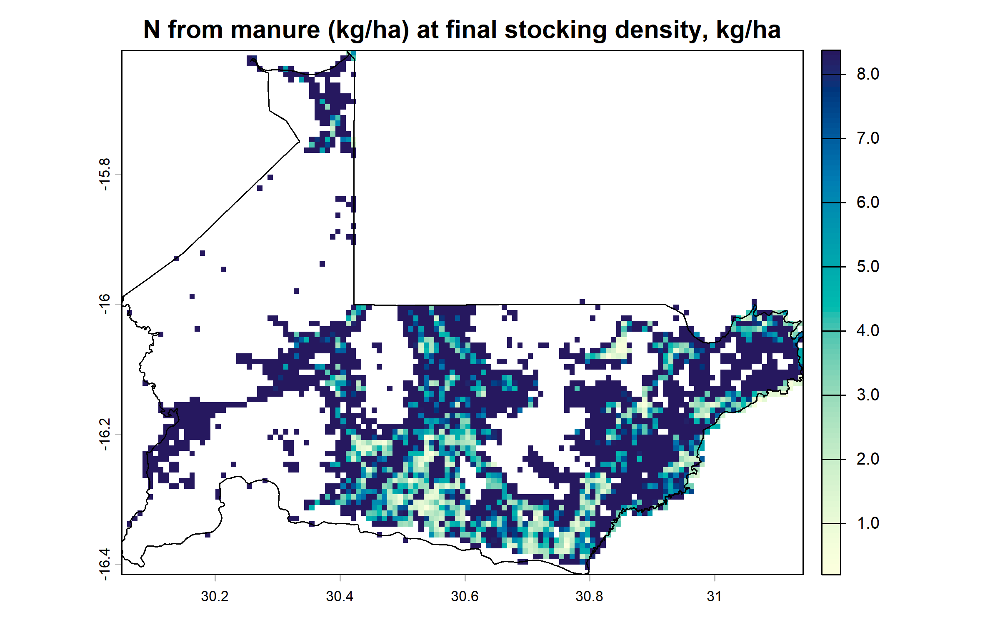
10.7 Compare modelled stocking density with gridded livestock data
The modelled stocking density can be compared with an independently produced livestock distribution dataset. Here, the FAO Gridded Livestock of the World (GLW) dataset is used for comparison. It can be downloaded here: https://www.dropbox.com/scl/fi/1p9h4l2s3sswru71teq3y/GLW4-2020.D-DA.CTL.tif?rlkey=37r1hydf2ep527j0lvm0wrwez&st=f8b5sjsf&dl=0.
The GLW raster represents cattle density in heads per square kilometre. It is cropped and masked to Mbire District. Cattle numbers are converted to tropical livestock units using the conversion factor specified in the script (one head = 0.7 TLU).
The modelled livestock population is converted to TLU per square kilometre and resampled to the GLW grid using average resampling. The two datasets can then be compared at the GLW spatial resolution.
glw = rast("Data/Spatial/Raw/GLW4-2020.D-DA.CTL.tif")
# GLW cells are approximately 10 km; retain cells that partly overlap the
# district
glw = mask(crop(glw, zwe, snap = "out"), zwe, touches = TRUE)
# Convert cattle heads to TLU
glw = glw * 0.7
# Modelled livestock density (TLU / km2)
mine_km2 = final_TLU/(cell_ha/100)
# Aggregate modelled density to the GLW grid
mine_glw = resample(mine_km2, glw, method = "average")
compare = c(mine_glw, glw)
names(compare) = c("model_TLU_km2", "GLW_cattle_km2")
plot(compare)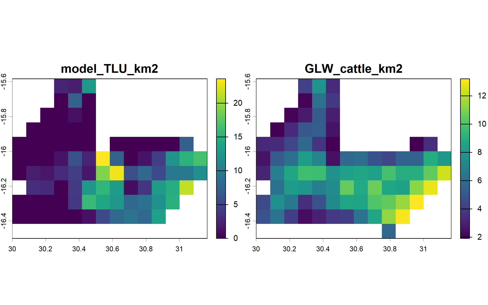
The spatial correspondence between the two datasets can be examined using a scatterplot and Spearman rank correlation. The 1:1 line indicates where the modelled and GLW values are equal.
d = as.data.frame(compare, na.rm = TRUE)
cor(d$model_TLU_km2, d$GLW_cattle_km2, method = "spearman")[1] 0.7135009lim = range(c(d$model_TLU_km2, d$GLW_cattle_km2), na.rm = TRUE)
plot(d$model_TLU_km2, d$GLW_cattle_km2, xlim = lim, ylim = lim, xlab = "Modelled livestock density (TLU/km2)",
ylab = "GLW cattle density (TLU/km2)")
abline(0, 1)
abline(lm(GLW_cattle_km2 ~ model_TLU_km2, data = d), col = "blue", lty = 1)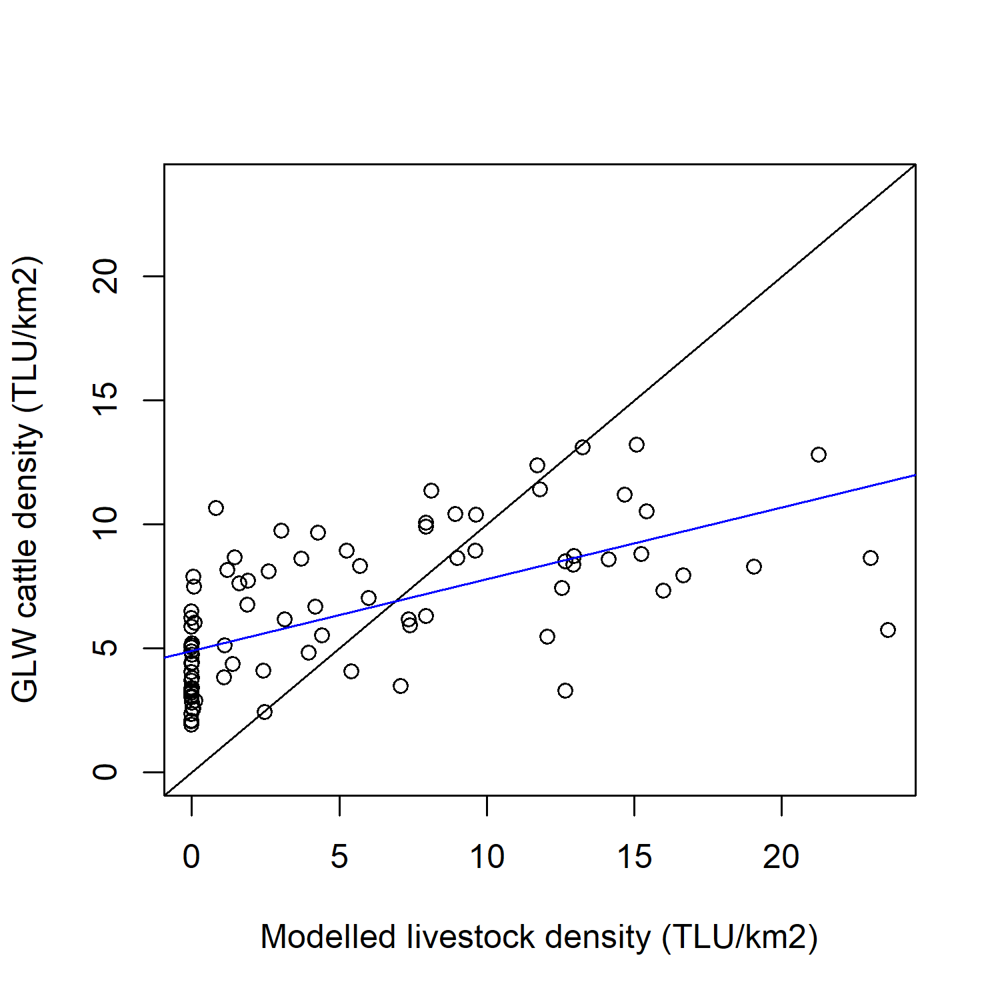